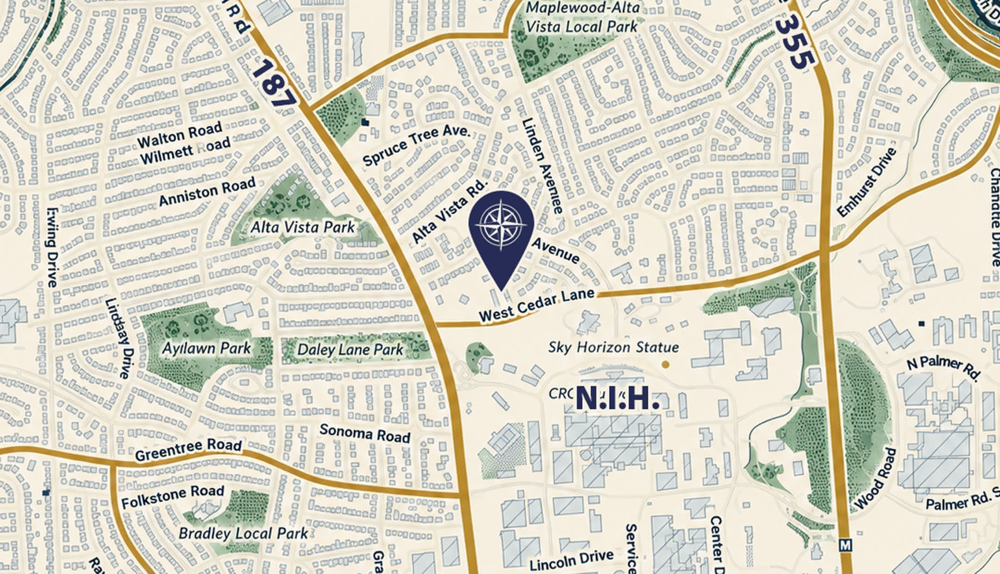

Concierge care from a former White House physician, right here in Bethesda, MD.
A small, membership-based practice where your doctor knows you, answers your call, and checks in on you every month, even when you’re healthy.


Setting Course
The mission that began before primary care.
I founded Anchor Point on the belief that great medical care begins with knowing you well before you need it. Intentionally small means more room for patient conversations and careful planning. My career as a Navy Commander, emergency physician, Department Chief at Walter Reed, and White House Physician taught me that medicine comes down to trust, sound judgment, and personal responsibility. In Naval Aviation, “Doc” is the physician you know and call when something happens. Anchor Point aims to bring that same relationship to individuals and families in Bethesda by keeping the practice small, personal, and accessible, so when something important happens, you know exactly who to call. Welcome aboard.
Ret. U.S. Navy Commander & Board-Certified Emergency Physician
Now open to new patients and families.
Personal and proactive.
Members receive a yearly Comprehensive Health Review covering history, risks, screenings, medications, fitness priorities and goals. Dr. Speicher creates a personalized plan with ongoing attention to results and prevention.
See Our ServicesAnnual Review
A comprehensive, unhurried review of current health, risk, prevention, and personal goals.
Personal Plan
A clear set of priorities for testing, prevention, fitness, lifestyle, and follow-up during the year.
Progress Report
A planned midyear visit after six months to reassess progress, results, priorities, and next steps.
Longitudinal Care
Ongoing attention to results, specialist referrals, preventive care, and changing health needs.
Care when and where you need it
Same-day care from a doctor who knows you.
Same-day or next-day visits for illness and injury, with in-office stitches, ultrasound and joint injections when appropriate.
Serving Bethesda, Chevy Chase, Potomac, North Bethesda, Kensington, and Rockville



FAQ
Good-to-knows.
Do I still need health insurance?
Yes. Membership does not replace health insurance. Keep coverage for specialists, hospital care, medications, and other services. We provide transparent rates with no copays for included visits.
Do you care for children?
Yes. Adults and children are welcome. You get one physician who understands the household, and who can help when a concern affects not just one chart, but a spouse, child, parent, and the rest of the family around them.
What does membership include?
Primary and preventive care, same-day or next-day appointments, direct physician access, selected office procedures, and care coordination. Explore membership details.
Care starts at conversation.
Interested in becoming a member? Reach out and Dr. Speicher will follow up to discuss whether Anchor Point might be a good fit for you and your family.